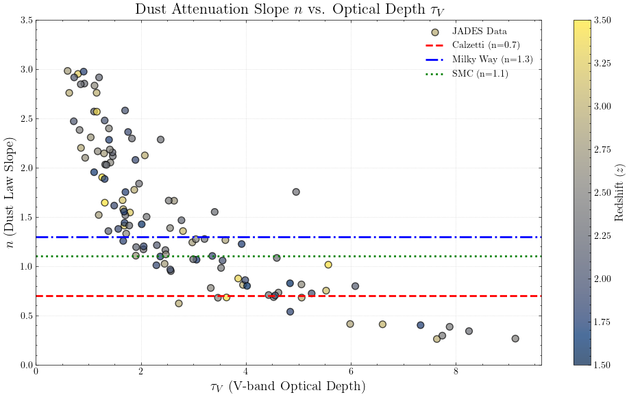
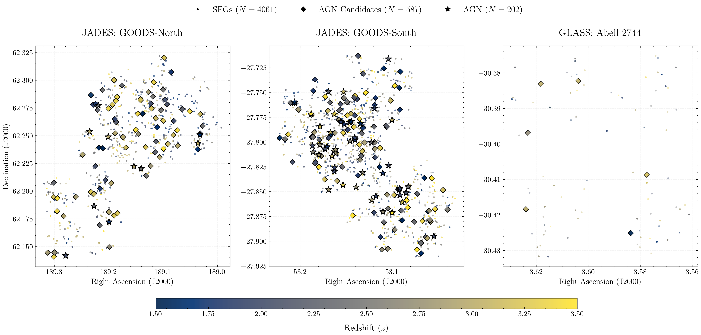

Breaking the fundamental degeneracy between dust normalization and attenuation slope ($n$) at Cosmic Noon using Balmer and Paschen multi-line diagnostics.
The standard method for estimating dust attenuation (the Balmer decrement, $H\alpha/H\beta$) is fundamentally degenerate. It can constrain total attenuation but forces an assumption regarding the shape of the dust curve.
The Solution: Deep JWST NIRSpec spectroscopy allows simultaneous access to rest-frame optical (Balmer) and near-infrared (Paschen) emission lines. Because Paschen lines are at longer wavelengths and less obscured by dust, this wide baseline breaks the degeneracy. This allows us to simultaneously constrain both the dust curve slope ($n$) and normalization ($\tau_V$) without relying on fixed empirical laws.

Accurate dust attenuation modeling requires a purely star-forming sample. Any contamination from Broad-Line Regions (BLR) or Narrow-Line Regions (NLR) in Active Galactic Nuclei (AGN) will artificially skew observed line ratios and invalidate the dust models. To ensure a pristine baseline, we utilize a rigorous multi-wavelength veto approach:
